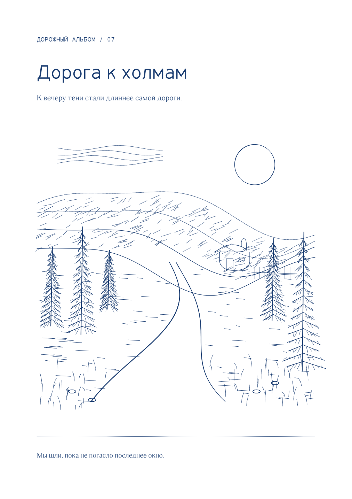
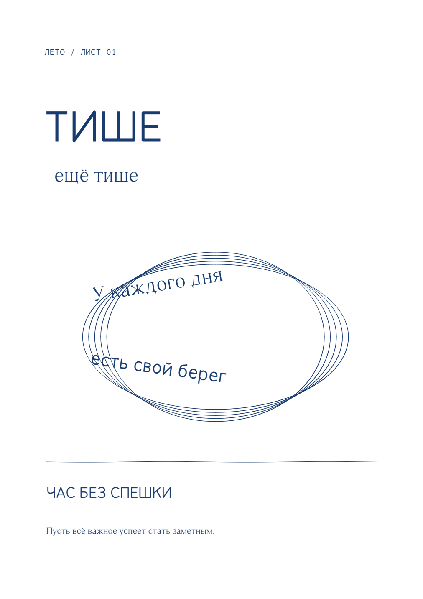
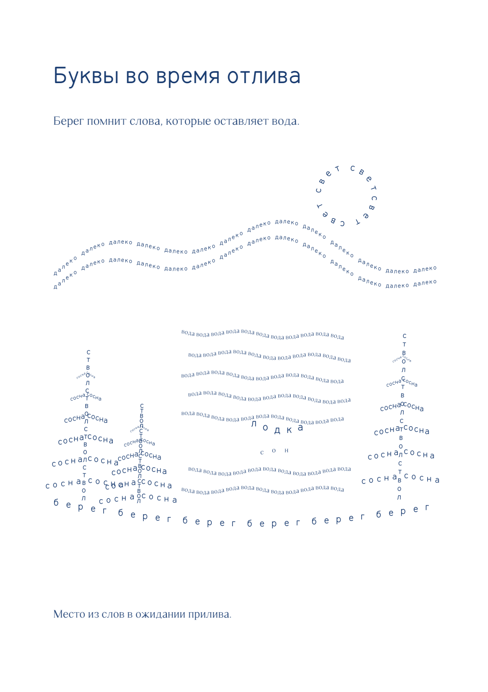
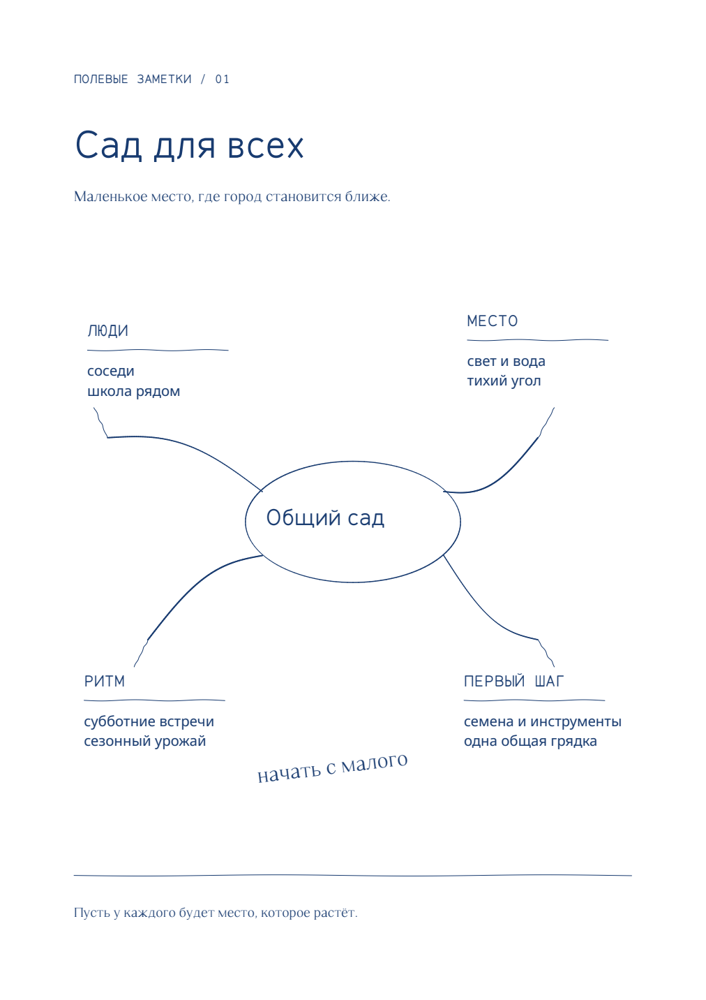
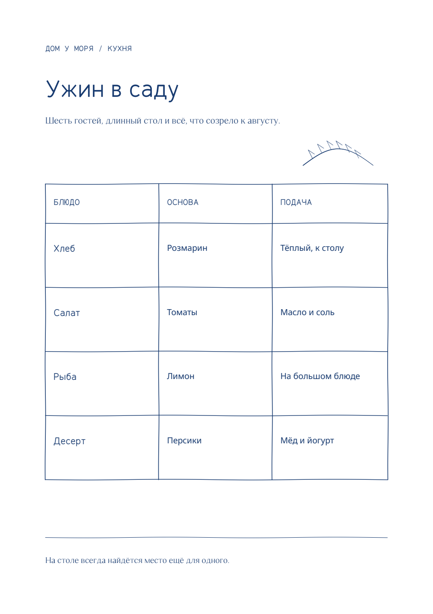
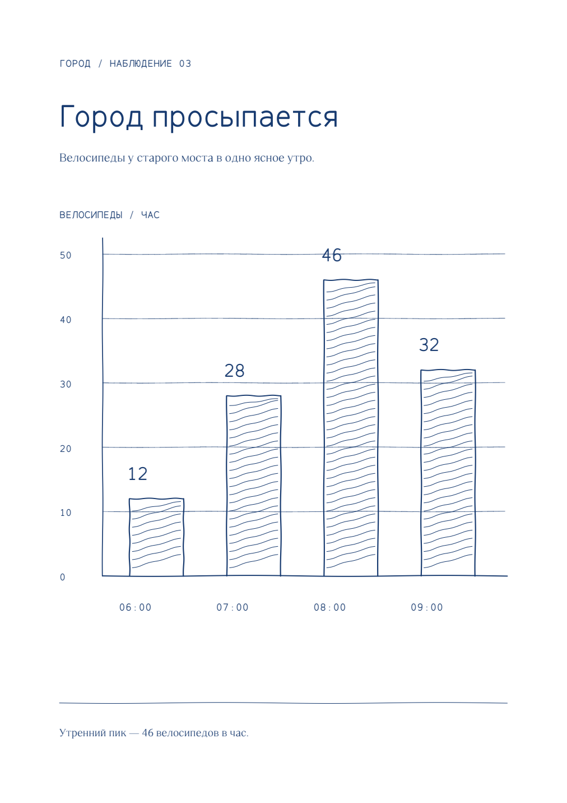
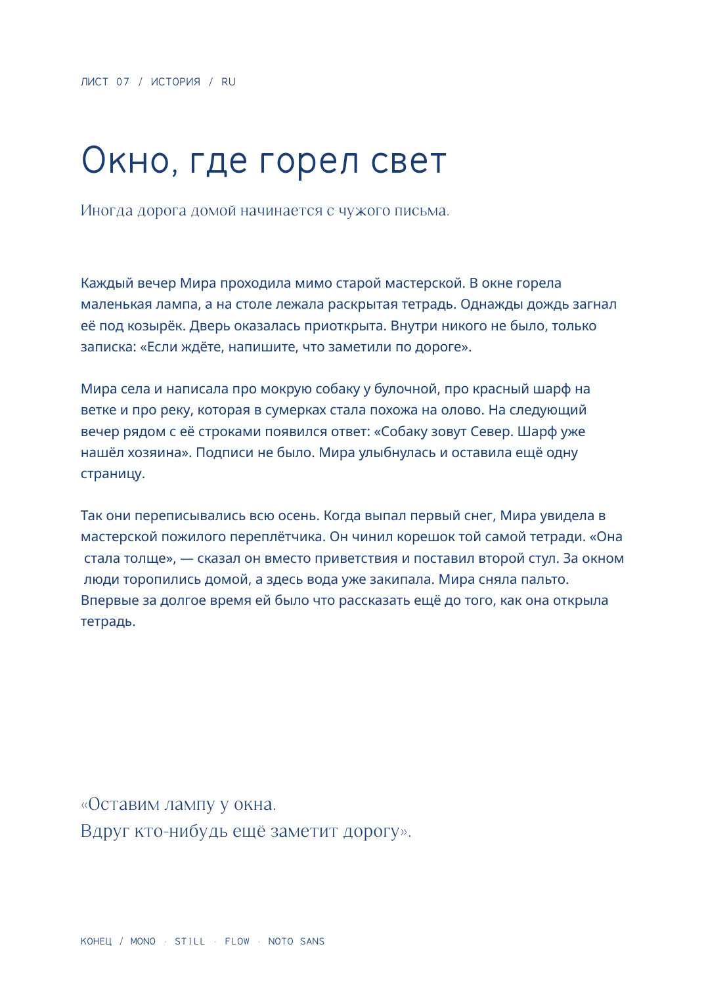

Свободный текст
Размещайте текст на листе и поворачивайте фрагменты, чтобы найти нужную композицию.
Zero / Текст · Перо · Пространство
Пишите там, где начинается мысль. Рисуйте между строк. Собирайте страницы в собственном ритме — на спокойном, свободном листе.
Смотреть примеры ↓
01 / Возможности
Размещайте текст на листе и поворачивайте фрагменты, чтобы найти нужную композицию.
Добавляйте ручные штрихи: рисунки, линии и заметки рядом с текстом.
Дайте каждой мысли своё место. Добавляйте страницы и переходите между ними.
Смотрите на страницы вместе, собирайте их в стопки и связывайте идеи на столе.
Выделяйте важное мягкими цветными мазками, сохраняя ощущение бумаги.
Начинайте с готовой структуры. Шаблоны доступны на русском и английском.
02 / Галерея






Три голоса Zero
Flow, Still и Mono уже живут в Zero.
Для заметок и свободного письма
Мысль начинается с линии.
Слова находят свой ритм.
Для спокойных текстовых страниц
Остановиться на минуту.
Заметить самое важное.
Для списков и выравнивания
01 мысль 12:30
02 набросок 14:05
03 история 18:40
Загрузки
Скоро
Все загрузки